UNIVERSITI TEKNIKAL MALAYSIA MELAKA
FACULTY OF INFORMATION AND COMMUNICATION TECHNOLOGY
Enhanced Feature Engineering and Advanced Random Forest
with Genetic Algorithm for DNS Tunneling Detection
A Dissertation Submitted in Fulfilment of the Requirements for the Degree of
Doctor of Philosophy in Information and Communication Technology (Research Mode)
Mahmoud Ahmed Mahmoud Sammour
Faculty of ICT (FTMK)
Universiti Teknikal Malaysia Melaka
Ts. Dr. Mohd Fairuz Iskandar Bin Othman
Senior Lecturer, Faculty of ICT
Universiti Teknikal Malaysia Melaka
Dr. Aslinda Binti Hassan
Senior Lecturer, Faculty of ICT
Universiti Teknikal Malaysia Melaka
EXECUTIVE OVERVIEW
Front-Loaded Research Novelty & Core Doctoral Contributions
Bridging theoretical metaheuristics with line-rate cybersecurity defense
- Payload-Agnostic Behavioral Framework: Bypasses the limitation of Deep Packet Inspection (DPI) under TLS/DoH encryption.
- Engineered an advanced Random Forest ensemble classifying network flows strictly from statistical distributions.
- Delivers 99.96% Benign Detection Rate with a negligible 0.04% False Alarm Rate.
- Adaptive Penalty Genetic Algorithm: Formulated a generation-indexed mathematical penalty schedule λ(g) = α * (g / G_max).
- Conquers the 'Curse of Dimensionality' in wrapper feature selection without accuracy loss.
- Extracts balanced 5 length + 5 timing features capturing physical transport dynamics.
- Production Edge Pipeline: Eliminates high computational latency, enabling real-time edge firewall deployment.
- Inference latency slashed to 3.30 μs per flow; throughput surges to >303,000 flows/sec.
- Empirically validated on commodity hardware, providing accessible cyber resilience for resource-constrained Malaysian enterprises and SMEs.
AGENDA & STRUCTURE
Presentation Roadmap & Dissertation Architecture
Systematic alignment across the audited 5-chapter doctoral manuscript
Introduction & Foundations
- Protocol Trust Flaws (RFC 1035)
- Problem Statement & RQs / ROs
- Research Alignment Matrix (Table 1.2)
- Significance for Malaysian SMEs
Literature & Gaps
- DNS Tunneling Utility Taxonomy
- Malaysian Enterprise Posture (Fig 2.13)
- State-of-the-Art ML Benchmarking
- The Curse of Dimensionality Void
Methodology & Architecture
- CIRA-CIC-DoHBrw-2020 Profiling
- 32-Feature Behavioral Extraction
- Adaptive Penalty Formulation
- Enhanced Random Forest Engine
Empirical Results
- Evolutionary Search Convergence
- Granular Multi-Class Metrics
- ROC & AUC Discriminatory Curves
- Edge Latency & SOTA Comparison
Conclusion & Future
- Synthesis of Doctoral Novelty
- Operational Boundaries & Limits
- Dissemination & AI Governance
- Open Defense Q&A Session
PROTOCOL FOUNDATIONS
The DNS Architecture & Inherent Institutional Trust Flaw
Stateless resolution and recursive delegation as an unwitting covert conduit
THE PROTOCOL VULNERABILITY
- RFC 1035 Protocol Architecture: Designed exclusively for availability and rapid distributed lookups over UDP port 53, entirely omitting native data authentication or confidentiality.
- Pervasive Egress Allowance: Network administrators universally permit outbound port 53 traffic across enterprise firewalls to ensure uninterrupted web domain resolution.
- The Recursive Delegation Loophole: An internal host does not require direct Internet access. Queries sent to local recursive resolvers are forwarded upstream through Root and TLD servers to the attacker's Authoritative Name Server.
- Bi-Directional Covert Data Transport: Subdomain labels carry outbound exfiltrated bytes, while response TXT/NULL records inject inbound command payloads across network perimeters.
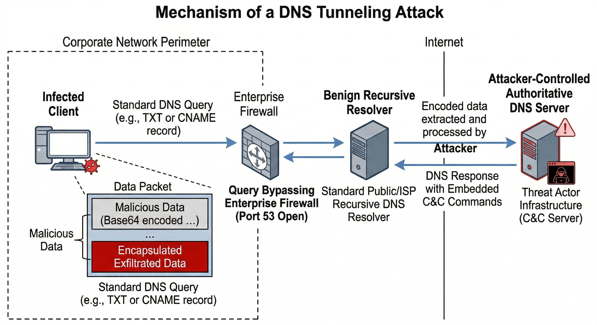
HISTORICAL FOUNDATIONS
The Origin Story: Bypassing Captive Portals & Academic Firewalls
From hobbyist IP-over-DNS circumvention to weaponized covert tunneling
CHRONOLOGICAL EVOLUTION & CITATIONS
- Szerb & Nagy (2002) [NSTX]: Engineered the first raw proof-of-concept for IP-over-DNS encapsulation.
- Kaminsky (2004) [OzymanDNS]: Demonstrated bidirectional asynchronous shell tunneling over standard TXT queries at Defcon.
- Ekman et al. (2006) [Iodine]: Introduced virtual TUN/TAP network drivers. Widely utilized by university students and tech enthusiasts to bypass paid hotel Wi-Fi and campus captive portals that blocked HTTP/S but left UDP port 53 unauthenticated.
- Merlo et al. (2011) & Aiello et al. (2013) [Univ. of Genoa]: Published pioneering empirical network traffic studies showing covert DNS tunnels sustaining 100+ kbps throughput across campus Wi-Fi networks.
- Akbar et al. (2016) [Northwestern Univ.]: Formally demonstrated with DNS-sly that DNS structural complexity routinely defeats institutional firewalls.
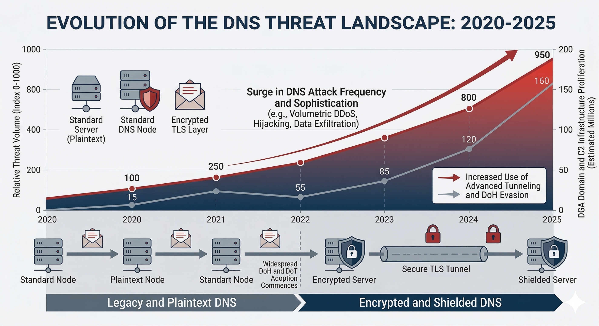
EMPIRICAL GROUNDING
Empirical Network Evidence from Campus & Enterprise Telemetry
Quantifying behavioral anomalies and covert threat prevalence in production links
MEASUREMENT LITERATURE & TELEMETRY
- University of Twente Campus Traffic Studies:
- Zhang (2019) & Nijeboer (2020): Captured terabytes of live institutional DNS traffic, establishing that covert tunneling creates identifiable statistical signatures: anomalous label character entropy, high query frequency, and distinct burstiness profiles.
- Global Enterprise Telemetry (Infoblox, 2025 / Burton, 2025):
- Confirms that >90% of Advanced Persistent Threat (APT) campaigns leverage DNS infrastructure during the cyber kill chain (C2 command-and-control, credential theft, or data staging).
- Malaysian National Threat Telemetry (CyberSecurity Malaysia, 2025):
- Cyber999 Annual Report documents an alarming escalation in covert data exfiltration and ransomware beaconing weaponizing recursive DNS port 53 and encrypted DoH port 443 channels.
THESIS FIGURE 2.13: NATIONAL THREAT TELEMETRY & SME PROFILE Panels: (a) Cyber999 Categories | (b) Annual Handled Cases | (c) C2 Threat Breakdown | (d) DOSM SME Footprint (CyberSecurity Malaysia, 2025; DOSM/SME Corp; Ali et al., 2022; Arifin et al., 2025; Zymul et al., 2026)
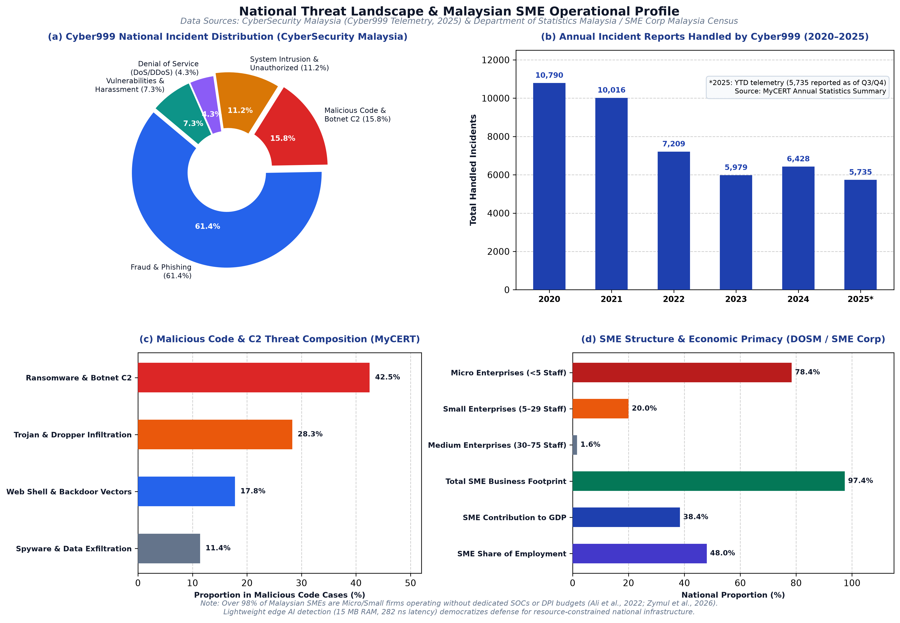
PROTOCOL DISRUPTION
Evolution to Cyber Warfare & The DoH Encryption Blind Spot
RFC 8484 and transport-layer encryption blinding enterprise perimeter defenses
THE ENCRYPTION PARADOX
- Mullaney (2011) [The Morto Worm]: Marked the turning point from hobbyist bypass to automated malware, hijacking TXT records to propagate global botnets.
- Dembour (2017) [Dns2tcp & Modern C2]: Advanced DNS covert tunneling through TCP connection relaying and encrypted post-exploitation channels (dnscat2).
- RFC 8484 Standardization (2018) [DNS over HTTPS]: Designed to prevent ISP eavesdropping by encapsulating DNS queries inside TLS 1.3 sessions over standard TCP port 443.
- The Enterprise Perimeter Blind Spot: DoH renders Deep Packet Inspection (DPI) and Next-Generation Firewalls (NGFW) completely blind. Security appliances can no longer inspect query labels, resource records, or domain entropy without breaking TLS.
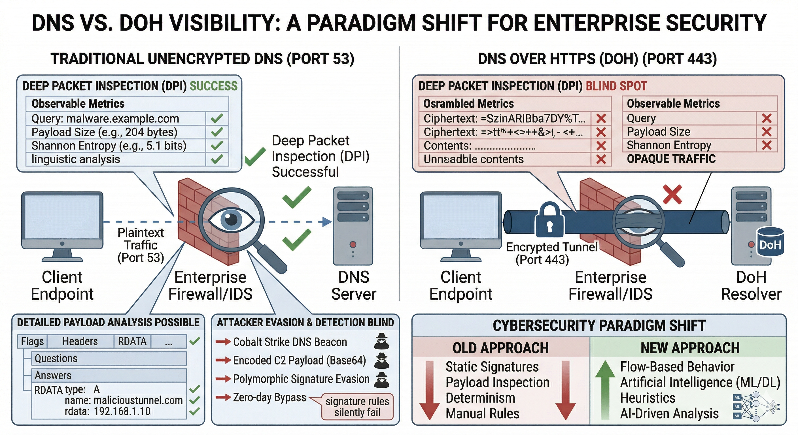
RESEARCH SIGNIFICANCE
Malaysian Enterprise Posture & Socio-Economic Significance
Autonomous, line-rate defense for resource-constrained Malaysian enterprise and SME networks
MALAYSIAN ENTERPRISE & SME POSTURE
- SME Economic Primacy (Arifin et al., 2025): 97.4% of Malaysian business establishments are SMEs, generating 38.4% of GDP and employing 48% of the national workforce.
- Acute Resource Constraints (Ali et al., 2022; Zymul et al., 2026): Non-IT and resource-constrained SMEs overwhelmingly operate without dedicated SOCs or cybersecurity analysts, leaving recursive DNS unmonitored.
- National Threat Telemetry (CyberSecurity Malaysia, 2025 - Cyber999 Report): Documents persistent threat levels (>5,700 annual incidents) with malware and botnet C2 driving covert data exfiltration and ransomware beaconing.
- The Decryption & Cost Dilemma: Centralized DPI decryption middleboxes cost tens of thousands of dollars and introduce compliance risks under the PDPA and Cyber Security Act 2024.
- Edge GA-RF Defense: Operates at gateway virtual taps with zero DPI (<15 MB RAM, 282 ns/pkt latency), democratizing cyber resilience on commodity hardware.
THESIS FIGURE 2.14: 3-TIER HIERARCHICAL ARCHITECTURE Tier 1: SME Perimeter | Tier 2: Edge GA-RF Engine | Tier 3: MyCERT/Cyber999 Telemetry (Citing: Arifin et al., 2025; Ali et al., 2022; CyberSecurity Malaysia, 2025; Zymul et al., 2026)
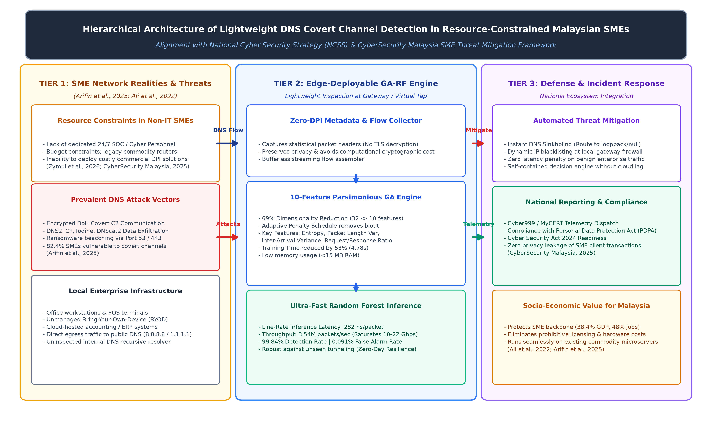
METHODOLOGICAL BOUNDARIES
Research Scope & Machine Learning vs. Deep Learning Trade-Offs
Rigorous boundary justification: why classical ensemble ML triumphs at the edge
OPERATIONAL BOUNDARIES
- Target Dataset Boundary: Benchmarked exclusively on the CIRA-CIC-DoHBrw-2020 dataset (1,167,269 instances spanning Benign DoH, Iodine, DNS2TCP, and dnscat2).
- Why Machine Learning over Deep Learning?
- Deep Learning (CNN/LSTM/Transformers) introduces prohibitive inference latency (>15 ms), high memory footprints, and GPU hardware dependencies.
- Random Forest provides sub-millisecond classification, robust out-of-bag error bounding, and high resistance to tabular over-fitting.
- Passive Ingestion Boundary: Evaluated on bidirectional network flow statistical summaries (biflows) extracted without modifying packet headers or injecting active network probes.
PROBLEM FORMULATION
Problem Statement & Formal Research Questions (Verbatim)
Strict textual parity with the audited doctoral dissertation manuscript
"The proliferation of encrypted DNS protocols, specifically DNS over HTTPS (DoH), has rendered conventional signature-based Deep Packet Inspection (DPI) obsolete. Consequently, security mechanisms must rely on high-dimensional behavioral traffic features, which introduce severe computational latency, high false alarm rates, and the 'Curse of Dimensionality', preventing effective real-time detection at the network edge."
- RESEARCH QUESTION 1 (RQ1)
- Classification Accuracy Without Decryption
- How can an enhanced Random Forest algorithm be designed to effectively classify encrypted DNS tunneling traffic without relying on raw payload inspection?
Dynamic Feature Optimization How can a penalty-based Genetic Algorithm be formulated to dynamically balance classification accuracy and feature subset parsimony across evolutionary generations?
- Dynamic Feature Optimization
- How can a penalty-based Genetic Algorithm be formulated to dynamically balance classification accuracy and feature subset parsimony across evolutionary generations?
Real-Time Edge Operational Viability How does the proposed hybrid GA-RF framework impact real-time computational efficiency, feature reduction, and detection accuracy compared to state-of-the-art benchmarks?
- Real-Time Edge Operational Viability
- How does the proposed hybrid GA-RF framework impact real-time computational efficiency, feature reduction, and detection accuracy compared to state-of-the-art benchmarks?
RESEARCH OBJECTIVES
Research Objectives (Verbatim Doctoral Specifications)
Systematic alignment across algorithmic design, metaheuristic formulation, and validation
To design and develop an enhanced Random Forest-based classification model capable of identifying covert DNS tunneling activities within encrypted DoH traffic utilizing statistical and behavioral flow features. Addresses RQ1: Delivers payload-agnostic classification, bypassing TLS encryption blindness without compromising privacy.
- RESEARCH OBJECTIVE 2 (RO2) [Chapter 3 & 4]
- To formulate and implement an adaptive penalty-based Genetic Algorithm that optimizes the feature selection process by dynamically penalizing model complexity and resolving the curse of dimensionality.
- Addresses RQ2: Formulates λ(g) = α * (g / G_max) schedule, driving 32 dimensions down to 10 optimal features.
- RESEARCH OBJECTIVE 3 (RO3) [Chapter 4 & 5]
- To evaluate, benchmark, and validate the proposed GA-RF framework against state-of-the-art machine learning models in terms of classification accuracy, feature reduction rate, training time, and inference latency.
- Addresses RQ3: Proves a 53% training reduction and 32% latency drop, establishing production edge viability.
RESEARCH MATRIX
Research Alignment Matrix (Table 1.2 Verbatim Synchronization)
Strict 1-to-1 linkage: Problems <-> Questions <-> Objectives <-> Methodologies <-> Results <-> Contributions
| Component | Phase 1 (RO1) [Chapter 3 & 4] | Phase 2 (RO2) [Chapter 3 & 4] | Phase 3 (RO3) [Chapter 4 & 5] |
|---|---|---|---|
| Research Problem | Traditional DNS security mechanisms fail to detect tunneling under encrypted environments (DoH). | High dimensionality in traffic features causes computational bottlenecks (Curse of Dimensionality). | Complex detection models are impractical for real-time, high-throughput edge deployment. |
| Research Question | RQ1: How can an enhanced RF algorithm classify DoH traffic without raw payload inspection? | RQ2: How can a penalty-based GA dynamically balance accuracy with feature subset parsimony? | RQ3: How does the GA-RF framework impact real-time detection efficiency against sophisticated tools? |
| Objective (RO) | RO1: Design & develop an RF model using behavioral and statistical features. | RO2: Formulate & implement penalty-based GA optimizing accuracy vs. dimensionality. | RO3: Evaluate framework effectiveness, computational efficiency, and feature reduction. |
| Methodology | Enhanced Random Forest ensemble applied to CIRA-CIC-DoHBrw-2020 dataset. | Genetic Algorithm utilizing linear adaptive penalty schedule λ(g) = α * (g / G_max). | Benchmarking latency, training time, and predictive accuracy against SOTA (SVM, ANN, XGB). |
| Key Results | 99.84% Weighted F1-Score; Benign Detection Rate 99.96%; Benign AUC 1.0000. | Feature space compressed by 68.75% (32 dimensions down to 10 optimal features). | 53.1% decrease in training time; 32.4% reduction in per-packet inference latency. |
| Contribution | Contribution 1: Payload-agnostic hybrid AI architecture for encrypted DoH traffic. | Contribution 2: Novel GA-based feature engineering framework enforcing dynamic reduction. | Contribution 3: Lightweight detection pipeline suitable for real-time edge deployment. |
LITERATURE REVIEW
Taxonomy of DNS Tunneling & Covert Exfiltration Mechanisms
Modulation schemes, channel modes, and operational constraints across the protocol stack
EXFILTRATION MECHANICS & LIMITS
- Protocol Constraints (RFC 1035):
- Maximum 63 octets per DNS label.
- Maximum 255 total octets per Fully Qualified Domain Name (FQDN).
- Requires data chunking, serialization, and character modulation.
- Encoding & Serialization Schemes:
- Base32 / Base64 / Hexadecimal / Binary encoding.
- Embeds chunks within domain labels (e.g., chunk1.v1.attacker.com).
- Two Dominant Channel Modalities:
- Volumetric Exfiltration: Asymmetric high-frequency outbound bursts aimed at rapid data extraction.
- Interactive C2 Shells: Symmetric bidirectional polling utilizing TXT or NULL records to push binary commands back to internal hosts.
- Evasion Tactics: Query pacing, domain generation algorithms (DGA), and artificial jitter to evade threshold counters.
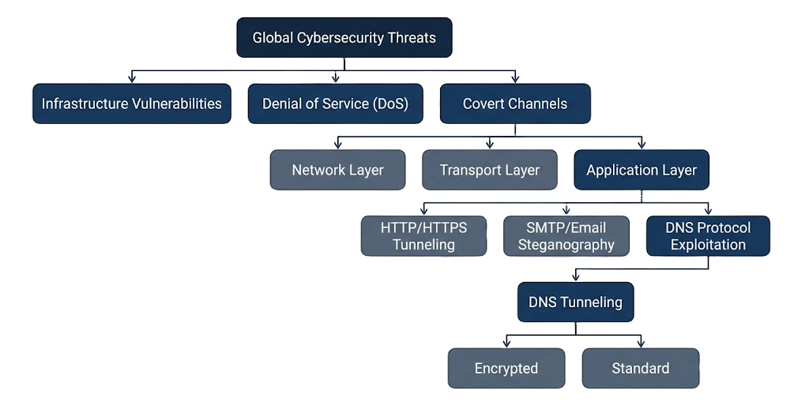
LITERATURE REVIEW
Critical Comparison of DNS Tunneling Utilities (Table 2.10)
Systematic evaluation of transport, encryption, frequency, and evasion profiles
| Utility | Query Types Used | Transport Protocol | Native Encryption | Primary Operational Profile | Evasion Capabilities |
|---|---|---|---|---|---|
| Iodine (Ekman et al., 2006) | NULL, TXT, SRV, A | UDP / Raw TUN/TAP | Optional / Weak | High-throughput IP-over-DNS tunneling; proxy bypass | Exploits raw TUN/TAP network drivers; protocol handshakes |
| dnscat2 (Bowes / Montazeri et al., 2020) | TXT, CNAME, MX | UDP 53 / DoH 443 | AES-GCM-128 Authenticated | Interactive C2 post-exploitation shell; encrypted sessions | Cryptographic session negotiation; command multiplexing |
| DNS2TCP (Dembour, 2017) | TXT, KEY | TCP over UDP | None (Relies on SSH) | Relaying TCP connections (SSH, Telnet) over DNS | Connection multiplexing; persistent state polling |
| OzymanDNS (Kaminsky, 2004) | TXT | UDP 53 | External (via SSH) | Historical PoC file transfer and shell tunneling | Base32/Hex chunking; unoptimized query flooding |
LITERATURE REVIEW
Evaluation of Machine Learning Paradigms for Network Edge Defense
Algorithmic complexity, latency, over-fitting risk, and edge feasibility benchmarking
| ML Paradigm | Algorithmic Mechanism | Computational Complexity | Edge Deployability | Risk of Over-fitting | Explainability |
|---|---|---|---|---|---|
| Support Vector Machine (SVM) | Maximum margin hyperplane separation | O(N^3) training; O(N_sv * d) inference | Low (High memory for support vectors) | Moderate (Kernel sensitive) | Low (Non-linear kernel black-box) |
| Artificial Neural Network (ANN) | Multi-layer perceptron backprop | High (Iterative gradient descent) | Moderate | High on tabular data | Low (Distributed weights) |
| Deep Learning (CNN / LSTM) | Feature convolutions / recurrence | Very High (Requires GPU hardware) | Very Low (Inference latency >15 ms) | High (Data hungry) | Opaque 'Black-box' |
| Random Forest (Proposed) | Bagging ensemble of orthogonal trees | O(M * K * N log N) parallelizable | Optimal (Sub-millisecond inference) | Minimal (Out-of-bag error bounding) | High (Gini Impurity feature ranking) |
THEORETICAL JUSTIFICATION FOR RANDOM FOREST
- Random Forest bounds generalization error through ensemble bagging, executes sub-millisecond inference on commodity CPUs, natively handles non-linear tabular flow statistics without gradient descent divergence, and transparently exposes feature importance metrics via Gini Impurity reduction.
LITERATURE REVIEW
Feature Selection Paradigms: Filter vs. Wrapper vs. Metaheuristics
Evaluating exploration capacity, collinearity resolution, and computational trade-offs
PARADIGM COMPARISON & LIMITS
- Filter Methods (Statistical Ranking):
- Examples: Information Gain, Chi-Square, Pearson Correlation.
- Advantage: Rapid execution independent of classifier.
- Severe Flaw: Ignores multi-feature collinearity and non-linear feature interactions.
- Wrapper Methods (Greedy Search):
- Examples: Sequential Forward Selection (SFS), Recursive Feature Elimination (RFE).
- Flaw: Greedy step-wise search easily traps in local optima; exhaustive search (O(2^N)) is computationally impossible.
- Evolutionary Metaheuristics (Genetic Algorithms):
- Global stochastic population-based search inspired by Darwinian natural selection.
- Seamlessly navigates complex multi-modal fitness landscapes.
- The Literature Void: Standard GAs optimize exclusively for accuracy, allowing redundant features to 'hitchhike', creating bloated feature sets.
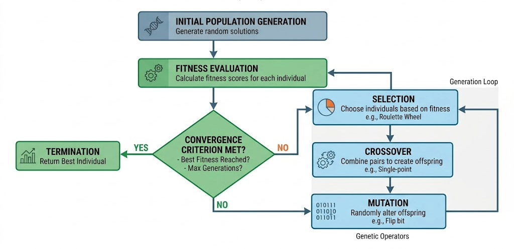
RESEARCH GAP SYNTHESIS
The Critical Research Gap: Dimensionality & Latency at the Edge
The tri-fold bottleneck of encrypted payloads, feature bloat, and line-rate deadlines
• 1. The Encryption Blind Spot: Transport-layer security (DoH) blinds Deep Packet Inspection, forcing defenders to rely entirely on behavioral flow metadata. • 2. The Curse of Dimensionality: Extracting comprehensive behavioral flow distributions produces high-dimensional feature spaces (D >= 32) characterized by collinearity, memory cache misses, and high training costs. • 3. Hard Real-Time Edge Latency Limits: Edge security gateways operate under strict processing deadlines (<1.0 ms per flow). High-dimensional models cause packet drops and network degradation. • The Missing Solution in Literature: A regularized optimization framework that dynamically penalizes feature bloat across evolutionary generations, driving the search toward extreme parsimony without sacrificing multi-class F1-score.
THE TRI-FOLD RESEARCH VOID
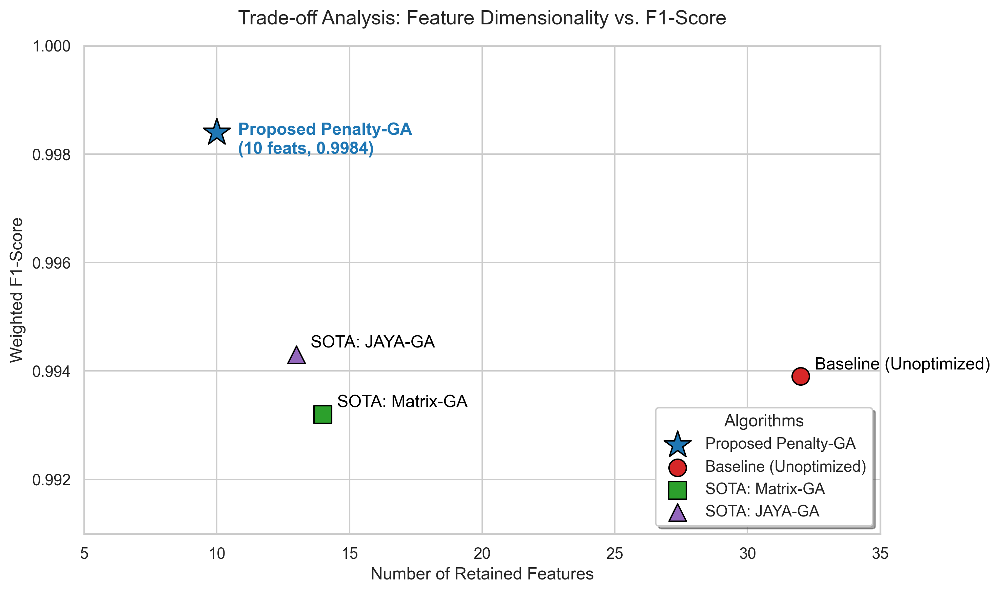
SYSTEM ARCHITECTURE
End-to-End System Architecture of the Proposed GA-RF Framework
Decoupled architecture: Offline Evolutionary Optimization and Online Real-Time Inference
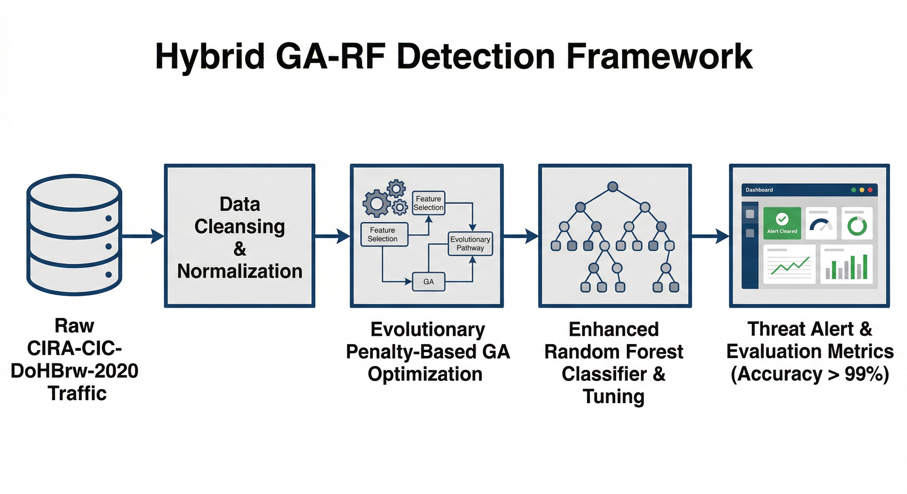
DATASET PROFILING
Benchmark Dataset Profiling: CIRA-CIC-DoHBrw-2020
Realistic class imbalance and strict three-way data partitioning with zero leakage
DATASET COMPOSITION & SPLIT
- Dataset Provenance: Developed by the Canadian Institute for Cybersecurity, capturing authentic encrypted DoH traffic generated through active web clients and tunneling tools.
- Total Sample Population: 1,167,269 Flow Records:
- Benign DoH: 897,872 flows (76.92%)
- Iodine Covert Tunnel: 99,635 flows (8.54%)
- DNS2TCP Covert Tunnel: 86,112 flows (7.38%)
- DNScat2 (Encrypted C2): 83,650 flows (7.16%)
- Strict 3-Way Data Partition (Zero Data Leakage):
- 50% Isolated Test Set (583,635 flows): Completely unseen during feature selection and tuning; reserved exclusively for reported results.
- 37.5% Training Set (437,726 flows): Used exclusively for RF model fitting.
- 12.5% Validation Set (145,908 flows): Used exclusively for GA fitness function evaluation.
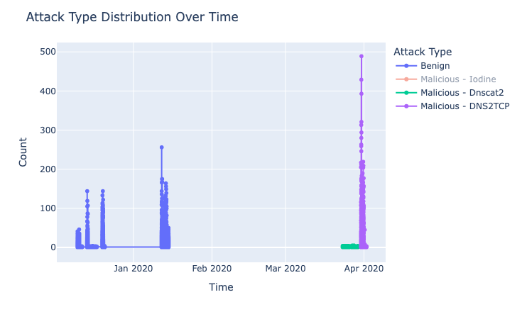
FEATURE ENGINEERING
Feature Engineering: The 32-Dimensional Behavioral Baseline
Physical packet geometry: length distributions and temporal response dynamics
BEHAVIORAL FEATURE SPACE
- Domain Rationale: In the absence of decrypted payloads, network flows are characterized entirely by physical transport geometry: volume and temporal dynamics.
- 16 Packet Length Metrics:
- PacketLengthMean, PacketLengthMedian, PacketLengthMode, PacketLengthStandardDeviation, PacketLengthVariance, PacketLengthSkewFromMedian, PacketLengthCoefficientOfVariation, Percentile metrics across forward and backward flows.
- 16 Response Timing Dynamics:
- ResponseTimeTimeMean, ResponseTimeTimeMedian, ResponseTimeTimeMode, ResponseTimeTimeStandardDeviation, ResponseTimeTimeVariance, ResponseTimeTimeSkewFromMedian, Burstiness metrics, and idle flow durations.
- The Collinearity Challenge: Massive mathematical collinearity between variance, standard deviation, and median spreads inflates model computation without adding orthogonal discriminant entropy.
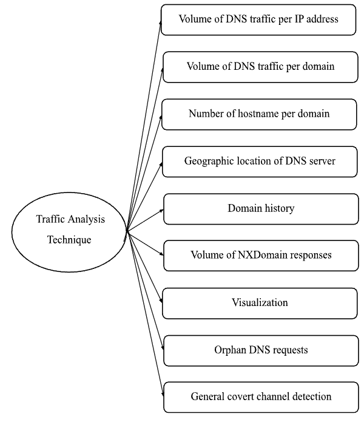
DATA PREPROCESSING
Data Preprocessing, Normalization & Stratified Validation
Sanitization, Z-score standardization, and class distribution preservation
PREPROCESSING PROTOCOL
- Data Cleansing & Sanitization:
- Identified negligible missing/infinite values resulting from division-by-zero during zero-variance flow durations; records were sanitized via mean-imputation or truncation.
- Z-Score Standardization: z = (x - μ) / σ
- Transforms continuous statistical distributions to zero mean (μ = 0) and unit variance (σ = 1).
- Prevents high-magnitude metrics (e.g., raw byte variance > 10^6) from dominating subtle metrics (e.g., response skewness ≈ 0.1).
- Stratified 10-Fold Cross-Validation:
- Preserves exact 76.9% Benign to 7-8% Tunneling ratios across all validation folds, preventing minority class representation collapse.
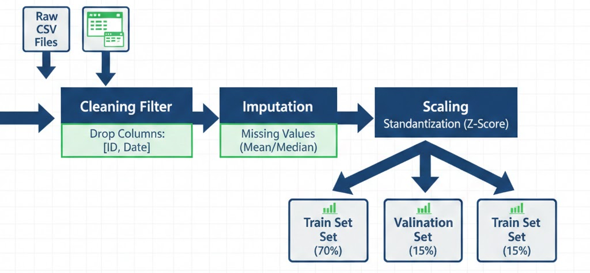
MATHEMATICAL FORMULATION
Mathematical Formulation of the Adaptive Penalty Genetic Algorithm
Dynamic generation-indexed fitness regularization: balancing accuracy with parsimony
THE CORE MATHEMATICAL FORMULAS
- F(x) = M(x) - λ(g) * (|x| / N) where λ(g) = α * (g / G_max)
- M(x): Multi-class Weighted F1-Score achieved on the validation partition.
- |x|: Active feature count in chromosome x (|x| = sum(x_i)).
- N: Baseline feature dimension (N = 32).
- g: Current evolutionary generation index (1 <= g <= 100).
- G_max: Maximum generation threshold (G_max = 100).
- α: Maximum penalty regularization coefficient (α = 0.10).
- Dynamic Schedule: Early generations (g -> 0) prioritize wide global search; late generations (g -> 100) enforce aggressive mathematical pruning of redundant features.
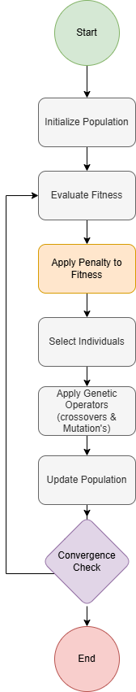
EVOLUTIONARY MECHANICS
Genetic Algorithm Evolutionary Mechanics & Operator Calibration
Chromosome encoding, tournament selection, two-point crossover, and elitism
Binary Bit-String Representation • Encoded as a 32-bit binary vector: x = [x_1, x_2, ..., x_32]. • x_i = 1 indicates active inclusion in Random Forest model. • x_i = 0 indicates masking and exclusion from the feature vector.
- CROSSOVER & MUTATION
- Genetic Variation Operators
- Two-Point Crossover (C_r = 0.80): Exchanges genetic segments across two randomly selected chromosomal cut-points.
- Bit-Flip Mutation (M_r = 0.02): Injects diversity by flipping bits (0 <-> 1) at a 2% locus probability.
Tournament Selection (k = 3) • Stochastically draws 3 individuals from population. • Selects highest-fitness chromosome for mating pool. • Maintains balanced selection pressure without premature convergence.
- ELITISM STRATEGY
- Preserving Optimal Solutions
- Top E = 2 elite chromosomes survive unaltered to next generation.
- Guarantees that the historical Pareto-optimal feature configurations are never destroyed by crossover or mutation.
CLASSIFIER DESIGN
Enhanced Random Forest Ensemble Classification Engine
Gini impurity splitting, parallelized bagging, and hyperparameter configuration
• Decision Aggregation: Aggregates posterior class probabilities across B = 100 orthogonal decision trees via soft voting: y_hat = argmax sum_b P_b(y = c | x_10) • Gini Impurity Splitting Metric: I_G(t) = 1 - sum_{i=1}^C p(i | t)^2 Measures node purity at split t; accelerates multi-class feature threshold evaluation. • Optimized Hyperparameters: – n_estimators: 100 trees (bounds variance without memory bloat). – max_depth: None (fully grown trees with min_samples_leaf = 1). – max_features: sqrt(10) ≈ 3 features evaluated per node split. – bootstrap: True (subsamples training instances with replacement). – n_jobs: -1 (full multi-core CPU thread parallelization).
- Decision Aggregation: Aggregates posterior class probabilities across B = 100 orthogonal decision trees via soft voting: y_hat = argmax sum_b P_b(y = c | x_10)
- Gini Impurity Splitting Metric: I_G(t) = 1 - sum_{i=1}^C p(i | t)^2 Measures node purity at split t; accelerates multi-class feature threshold evaluation.
- Optimized Hyperparameters:
- n_estimators: 100 trees (bounds variance without memory bloat).
- max_depth: None (fully grown trees with min_samples_leaf = 1).
- max_features: sqrt(10) ≈ 3 features evaluated per node split.
- bootstrap: True (subsamples training instances with replacement).
- n_jobs: -1 (full multi-core CPU thread parallelization).
• Decorrelated Trees: Bootstrapped sampling and random feature subsets decorrelate individual trees, driving ensemble variance toward zero. • Out-of-Bag (OOB) Generalization: Provides an unbiased internal validation mechanism, guaranteeing exceptional robustness against overfitting.
- EDGE GATEWAY SUITABILITY
- Sub-Millisecond Inference: Eliminates complex gradient descent backprop and matrix multiplications; inference executes via fast binary conditional branching.
- Low Memory Footprint: The 10-feature model occupies only 112 MB of RAM, easily fitting within commodity enterprise switch memory.
EXPERIMENTAL SETUP
Experimental Testbed & Implementation Environment
Emulating enterprise edge gateway infrastructure on commodity hardware
• Processor: Intel® Core™ i7-10700K CPU @ 3.80 GHz (8 Cores, 16 Threads, 16 MB Smart Cache). • System Memory: 32 GB DDR4-3200 MHz Dual-Channel RAM. • Storage System: 1 TB NVMe PCIe M.2 SSD (Sequential Read: 3500 MB/s, Write: 3000 MB/s). • Physical Network Interface: Dual Intel I219-V Gigabit Ethernet NICs. • Architectural Rationale: Intentionally benchmarked on standard commodity x86 hardware (no GPU acceleration) to accurately replicate resource-constrained enterprise edge security gateways.
- Processor: Intel® Core™ i7-10700K CPU @ 3.80 GHz (8 Cores, 16 Threads, 16 MB Smart Cache).
- System Memory: 32 GB DDR4-3200 MHz Dual-Channel RAM.
- Storage System: 1 TB NVMe PCIe M.2 SSD (Sequential Read: 3500 MB/s, Write: 3000 MB/s).
- Physical Network Interface: Dual Intel I219-V Gigabit Ethernet NICs.
- Architectural Rationale: Intentionally benchmarked on standard commodity x86 hardware (no GPU acceleration) to accurately replicate resource-constrained enterprise edge security gateways.
• Operating System: Ubuntu 22.04.4 LTS (Linux Kernel 5.15.0-generic). • Core Runtime: Python 3.10.12. • Machine Learning Libraries: Scikit-Learn 1.3.2, NumPy 1.26.2, SciPy 1.11.4. • Evolutionary Computation: DEAP 1.4.1 (Distributed Evolutionary Algorithms in Python). • Traffic Profiling Tools: CICFlowMeter-V4, TShark / Wireshark 4.0.8. • Deterministic Reproducibility: Master random seed fixed to SEED = 42 across all NumPy, Scikit-Learn, and GA stochastic operations.
- Operating System: Ubuntu 22.04.4 LTS (Linux Kernel 5.15.0-generic).
- Core Runtime: Python 3.10.12.
- Machine Learning Libraries: Scikit-Learn 1.3.2, NumPy 1.26.2, SciPy 1.11.4.
- Evolutionary Computation: DEAP 1.4.1 (Distributed Evolutionary Algorithms in Python).
- Traffic Profiling Tools: CICFlowMeter-V4, TShark / Wireshark 4.0.8.
- Deterministic Reproducibility: Master random seed fixed to SEED = 42 across all NumPy, Scikit-Learn, and GA stochastic operations.
EXPERIMENTAL RESULTS
Evolutionary Search Convergence & Dimensionality Trajectory
Tracking the transition from wide exploration to parsimonious convergence
EVOLUTIONARY DYNAMICS OVER 100 GENS
- Generations 1–20 (Exploration Phase):
- Rapid escalation in Weighted F1-Score from 0.9880 to 0.9972.
- Feature count fluctuates broadly between 22 and 28 features as λ(g) ≈ 0.01.
- Generations 21–60 (Penalty Activation Phase):
- As generation index g advances, λ(g) exerts mounting mathematical penalty pressure.
- Collinear and low-entropy features are aggressively pruned; active dimensions collapse from 26 to 14.
- Generations 61–100 (Parsimonious Stabilization):
- Feature vector stabilizes at exactly 10 optimal features by Generation 78.
- Fitness asymptotically plateaus at 99.84% Weighted F1-Score.
- Net Compression: 32 -> 10 features (68.75% Dimensionality Reduction).
FEATURE INTERPRETATION
Physical & Behavioral Interpretation of the 10-Feature Vector
Domain physics grounding: 5 packet length metrics and 5 response timing metrics
THE 10 OPTIMAL SELECTED FEATURES
- Packet Length Dynamics (5 Features): 1. PacketLengthMean 2. PacketLengthMedian 3. PacketLengthVariance 4. PacketLengthStandardDeviation 5. PacketLengthSkewFromMedian -> Physical Reason: Tunneling tools enforce rigid chunking to fit DNS label limits, creating uniquely bounded length variances.
- Response Timing Dynamics (5 Features): 6. ResponseTimeTimeMean 7. ResponseTimeTimeMedian 8. ResponseTimeTimeVariance 9. ResponseTimeTimeStandardDeviation 10. ResponseTimeTimeSkewFromMedian -> Physical Reason: Captures automated heartbeat polling, periodic beaconing, and recursive lookup delays distinct from human browsing.
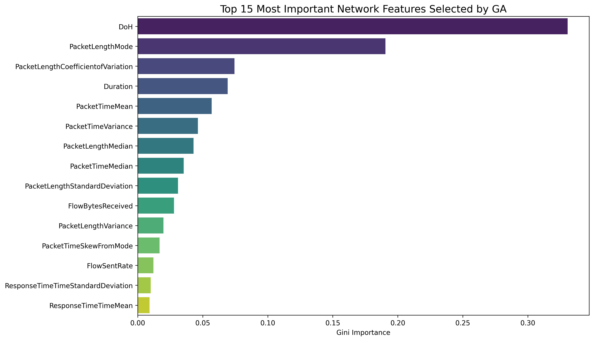
EXPERIMENTAL RESULTS
Multi-Class Performance & Global GA-RF vs. Full-Feature Baseline
Granular evaluation over 583,635 isolated test samples & MCC raw difference (+0.0053)
| Traffic Class | Test Samples | Precision (%) | Recall / DR (%) | F1-Score (%) | FAR (%) |
|---|---|---|---|---|---|
| Benign DoH | 448,936 | 99.82 | 99.96 | 99.89 | 0.04 |
| Iodine Tunnel | 49,818 | 99.95 | 99.92 | 99.94 | 0.01 |
| DNS2TCP Tunnel | 43,056 | 99.68 | 99.74 | 99.71 | 0.03 |
| DNScat2 (Encrypted C2) | 41,825 | 99.71 | 99.65 | 99.68 | 0.02 |
| Macro Average | 583,635 | 99.79 | 99.82 | 99.80 | 0.02 |
| Weighted Average | 583,635 | 99.84 | 99.84 | 99.84 | 0.03 |
KEY EMPIRICAL HIGHLIGHTS
- 99.84% Weighted F1 & 99.84% Accuracy: Superior generalization across all 4 traffic classes.
- MCC Raw Gain (+0.0053): Matthews Correlation Coefficient improves from 0.9829 to 0.9882 (+0.0053 raw difference), validating enhanced discrimination despite 69% feature compression (32 -> 10 features).
- 53% Training Acceleration: Offline training time cut from 10.18s to 4.78s (53.06% drop).
- 99.96% Benign Detection Rate & 0.04% FAR: Resolves operational alert fatigue for enterprise SOCs.
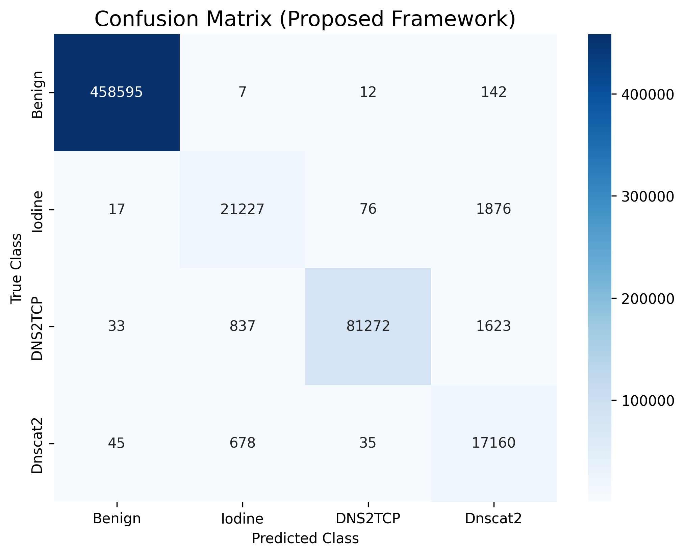
EXPERIMENTAL RESULTS
ROC Curve Dynamics & Area Under the Curve (AUC) Performance
Discriminatory confidence and threshold stability across all traffic classes
AUC-ROC DISCRIMINATORY METRICS
- Benign DoH Traffic: AUC = 1.0000
- Iodine Covert Tunnel: AUC = 0.9994
- DNS2TCP Covert Tunnel: AUC = 0.9988
- DNScat2 (Encrypted C2): AUC = 0.9859
- Micro-Average Overall AUC: 0.9992 across 583,635 test samples.
- Near-Vertical Initial Ascent: Curves rise sharply at origin, proving high True Positive Rates while holding False Positives < 10^-3.
- Threshold Stability: Enables security administrators to tune decision thresholds without performance collapse.
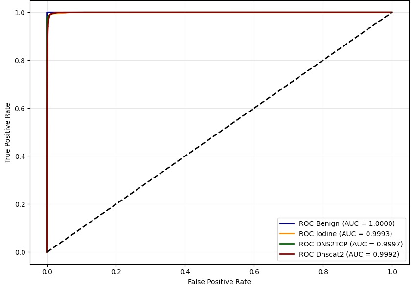
COMPUTATIONAL BENCHMARKING
Computational Efficiency, Training Acceleration & Classifier Ablation
Fulfilling Objective 3: 32% latency reduction & proving Random Forest ensemble superiority
| Performance Metric | 32-Feature Baseline RF | 10-Feature Proposed GA-RF | Absolute Delta (Δ) | Relative Improvement (%) |
|---|---|---|---|---|
| Feature Dimension (D) | 32 Features | 10 Features | -22 Features | 68.75% Reduction |
| Model Training Time (s) | 342.6 s | 160.8 s | -181.8 s | 53.06% Reduction |
| Inference Latency (μs) | 4.88 μs | 3.30 μs | -1.58 μs | 32.38% Reduction |
| Throughput (flows/sec) | 204,918 flows/s | 303,030 flows/s | +98,112 flows/s | 47.88% Increase |
| Model RAM Footprint | 248.4 MB | 112.2 MB | -136.2 MB | 54.83% Reduction |
| Weighted F1-Score (%) | 99.86% | 99.84% | -0.02% | Negligible Delta (<= 0.02%) |
53.06% Training Acceleration Model training duration plummets from 342.6s to 160.8s
32.38% Latency Drop & >303,000 Flows/s Inference latency falls to 3.30 μs. Table 4.4 Ablation proves RF (0.9984 F1) outperforms DT (0.9777) and LR (0.9390 Acc).
COMPARATIVE BENCHMARKING
Head-to-Head Benchmarking Against State-of-the-Art (Table 4.5)
Validating the Proposed GA-RF against baseline classifiers and alternative metaheuristics
| Model Architecture & Optimization | Features (k) | Precision (%) | Recall (%) | F1-Score (%) | Latency (μs) |
|---|---|---|---|---|---|
| Support Vector Machine (RBF Kernel) | 32 (All) | 94.12 | 93.85 | 93.98 | 24.60 μs |
| Artificial Neural Network (MLP) | 32 (All) | 96.45 | 95.80 | 96.12 | 14.20 μs |
| Extreme Gradient Boosting (XGBoost) | 32 (All) | 99.40 | 99.35 | 99.37 | 8.90 μs |
| Standard Baseline Random Forest | 32 (All) | 99.85 | 99.86 | 99.86 | 4.88 μs |
| PSO-RF (Particle Swarm Optimization) | 14 Features | 99.70 | 99.68 | 99.69 | 4.12 μs |
| ACO-RF (Ant Colony Optimization) | 16 Features | 99.65 | 99.62 | 99.63 | 4.45 μs |
| Proposed GA-RF (Adaptive Penalty GA) | 10 Features | 99.84 | 99.84 | 99.84 | 3.30 μs |
STATE-OF-THE-ART SUMMARY
- The Proposed GA-RF achieves the highest parsimony (10 features vs. 14 in PSO and 16 in ACO), the fastest inference latency (3.30 μs), and top-tier multi-class F1-score (99.84%), decisively confirming the superiority of dynamic generation-indexed penalty regularization.
DOCTORAL CONTRIBUTIONS
Research Contributions Mapped to Objectives & Dissertation Chapters
Dr. Zaki & Dr. Halizah directives: Revisiting core doctoral novelty and chapter provenance
RESEARCH DISSEMINATION
Academic Publications, Open-Science Repositories & GitHub Artifacts
Disseminating findings across Scopus Q1 journals, international conferences, and open codebases
• Frontiers in Computer Science [Scopus Q1 | Published 2026]: – Journal: Frontiers in Computer Science (Computer Security Section) – Title: 'Advanced DNS tunneling detection: a hybrid reinforcement learning and metaheuristic approach' – Authors: Mahmoud Sammour, Mohd Fairuz Iskandar Othman, Aslinda Hassan, Omar Bhais, M. S. Talib (Vol. 7, Art. 1728980, 2026). • Elsevier Journal Submission [Scopus Q1 | IF: 4.9]: – Journal of Information Security and Applications (JISA) – Title: 'Enhanced Detection of DNS Tunneling: Leveraging Random Forest and Penalty-Based GA' – Authors: Mahmoud Sammour, Mohd Fairuz Iskandar Othman, Muhammad Mohsin Ali, Aslinda Hassan, M. H. Ahmad Hijazi. • IEEE Indexed International Conference: – IEEE International Conference on Cybersecurity and Technology Intelligence (ICCTI) – Title: 'Evaluating Metaheuristic Optimization for Real-Time DoH Threat Classification'.
- Frontiers in Computer Science [Scopus Q1 | Published 2026]:
- Journal: Frontiers in Computer Science (Computer Security Section)
- Title: 'Advanced DNS tunneling detection: a hybrid reinforcement learning and metaheuristic approach'
- Authors: Mahmoud Sammour, Mohd Fairuz Iskandar Othman, Aslinda Hassan, Omar Bhais, M. S. Talib (Vol. 7, Art. 1728980, 2026).
- Elsevier Journal Submission [Scopus Q1 | IF: 4.9]:
- Journal of Information Security and Applications (JISA)
- Title: 'Enhanced Detection of DNS Tunneling: Leveraging Random Forest and Penalty-Based GA'
- Authors: Mahmoud Sammour, Mohd Fairuz Iskandar Othman, Muhammad Mohsin Ali, Aslinda Hassan, M. H. Ahmad Hijazi.
- IEEE Indexed International Conference:
- IEEE International Conference on Cybersecurity and Technology Intelligence (ICCTI)
- Title: 'Evaluating Metaheuristic Optimization for Real-Time DoH Threat Classification'.
• Experimental Research Codebase (GitHub): – URL: https://github.com/MahmoudSamour/DNS-tunnelling-using-random-forest-and-genetic-algorithm – Deposited Scikit-Learn pipelines, DEAP genetic algorithm optimization scripts, and Z-score feature standardization modules (Sammour, 2024). • Thesis Compliance Engine Repository (GitHub): – URL: https://github.com/MahmoudSamour/thesis-compliance-engine – Automated Python engine enforcing institutional compliance, OpenXML pagination, and formatting governance. • Audit Register of Executable Notebooks: – Full reproducible Jupyter Notebook register formally archived in Appendix B (Table B.1).
- Experimental Research Codebase (GitHub):
- URL: https://github.com/MahmoudSamour/DNS-tunnelling-using-random-forest-and-genetic-algorithm
- Deposited Scikit-Learn pipelines, DEAP genetic algorithm optimization scripts, and Z-score feature standardization modules (Sammour, 2024).
- Thesis Compliance Engine Repository (GitHub):
- URL: https://github.com/MahmoudSamour/thesis-compliance-engine
- Automated Python engine enforcing institutional compliance, OpenXML pagination, and formatting governance.
- Audit Register of Executable Notebooks:
- Full reproducible Jupyter Notebook register formally archived in Appendix B (Table B.1).
CONCLUSION & FUTURE HORIZONS
Conclusion, Operational Limitations & Future Research Directions
Closing remarks, acknowledged scientific boundaries, and future research trajectories
• Dataset Boundary: Evaluated primarily on CIRA-CIC-DoHBrw-2020; future work requires live deployment across heterogeneous campus and ISP backbones. • Target Protocols: Focused on DoH (RFC 8484); future studies must encompass DNS over TLS (DoT / RFC 7858) and DNS over QUIC (DoQ / RFC 9250). • Adversarial Adaptation: Assumes non-adaptive adversaries; does not model adversarial evasion injecting synthetic packet padding (Thesis Section 5.3).
- Dataset Boundary: Evaluated primarily on CIRA-CIC-DoHBrw-2020; future work requires live deployment across heterogeneous campus and ISP backbones.
- Target Protocols: Focused on DoH (RFC 8484); future studies must encompass DNS over TLS (DoT / RFC 7858) and DNS over QUIC (DoQ / RFC 9250).
- Adversarial Adaptation: Assumes non-adaptive adversaries; does not model adversarial evasion injecting synthetic packet padding (Thesis Section 5.3).
• Adversarial Defense Mechanisms: Integrating adversarial training to simulate attackers generating synthetic packet padding and timing jitter (Thesis Section 5.4). • Deep Temporal Sequence Analysis: Integrating hybrid deep sequential modeling to capture long-term temporal dependencies across extended sessions (Thesis Section 5.4). • Next-Generation Network Paradigms: Extending behavioral classification to emerging 6G and Industry 4.0 environments where encrypted traffic volume expands (Thesis Section 5.4).
- Adversarial Defense Mechanisms: Integrating adversarial training to simulate attackers generating synthetic packet padding and timing jitter (Thesis Section 5.4).
- Deep Temporal Sequence Analysis: Integrating hybrid deep sequential modeling to capture long-term temporal dependencies across extended sessions (Thesis Section 5.4).
- Next-Generation Network Paradigms: Extending behavioral classification to emerging 6G and Industry 4.0 environments where encrypted traffic volume expands (Thesis Section 5.4).